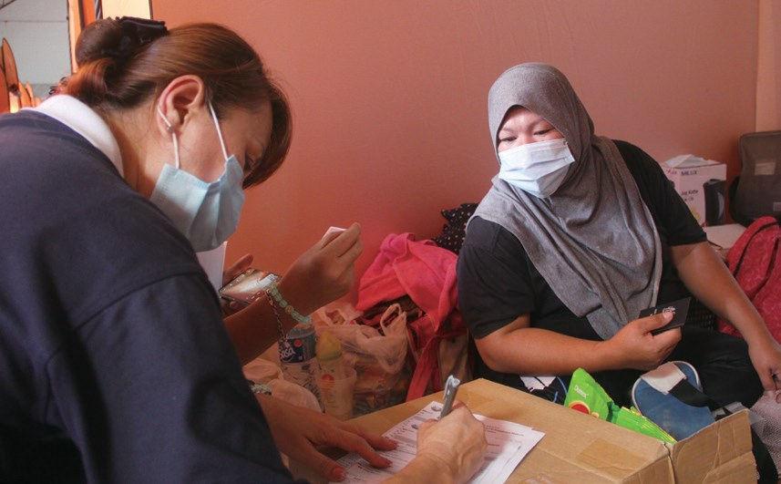
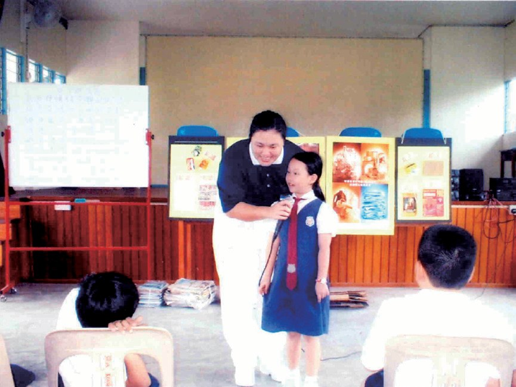
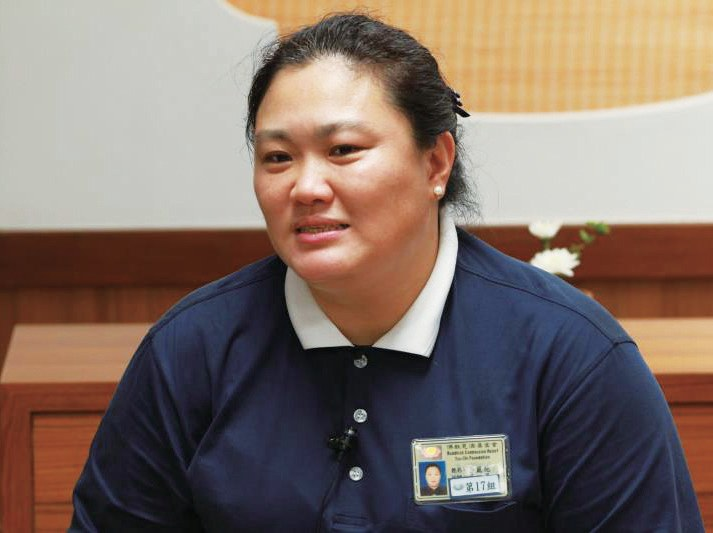
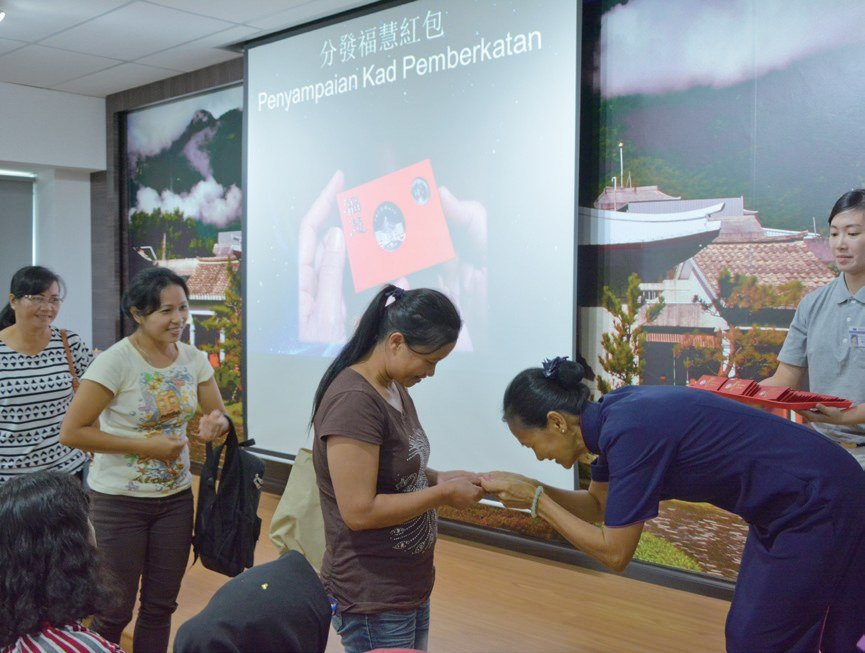
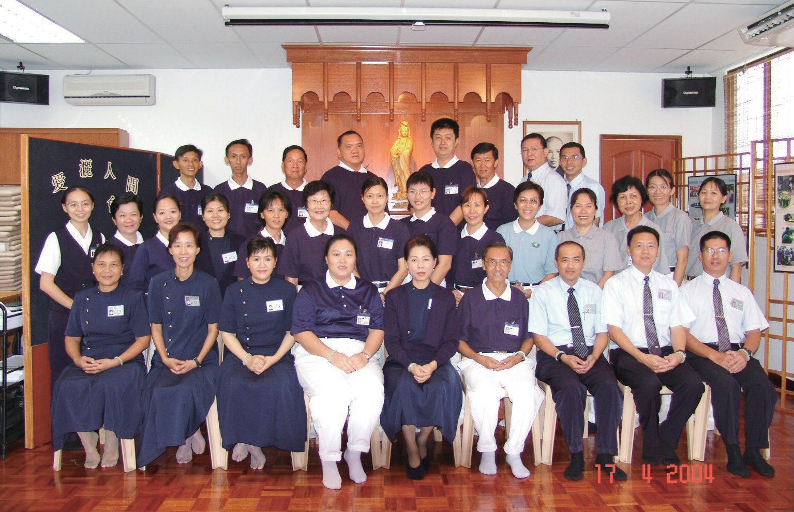

丹南聯絡處
不認識慈濟，為什麼還把錢捐給慈濟？

先別急著下結論，讀完再說說你的想法～
這一篇講丹南聯絡處：1999年，一場街頭募款，讓沙巴內陸小鎮的居民認識了慈濟。
你會讀到一家人從受助到回捐、一座搭在路邊的環保亭子，還有一位從臺灣嫁到丹南、急性子的負責人。
下面是原書的節錄，紅色底線是我們替你標出的轉折點。
讀之前：受到幫助的家庭，你覺得最好的結果是什麼？
從一場街頭募款開始
1999年，亞庇志工來到丹南小鎮。閱讀引導
丹南居民李麗花、劉瑞玉雖不認識慈濟這個團體，但也將好友們一同義賣的所得捐予慈濟協助救災。

就先捐了！
同年，亞庇聯絡處接獲提報，丹南有一個貧困家庭，家中有三名罹患肌肉萎縮症的子女，生活陷入困境，急需援助。
亞庇慈濟人多次訪查，瞭解丹南有許多赤貧部落需要關懷，決定固定前往訪視。
2000年1月，黃錦源為了更瞭解慈濟，邀請亞庇慈濟前來丹南舉辦茶會，翁敦學向與會者分享慈濟濟貧理念，鼓勵大家一同來投入。
黃錦源發心提供店屋空間作為丹南共修據點，並在李永明（濟專）及歐陽記光（濟緣）等亞庇志工協助下，積極推動會務。
變成共修的地方！
- 17位志工p.778
- 832人會員p.778
翻轉手心
一家三口都生病，怎樣站起來？閱讀引導
早期的幾位志工，不太熟悉當地方言，還好有志工李秀珍承擔訪視組長，以擅長的馬來語及丹南方言，時常陪伴關懷個案。
2003年起，丹南志工開始關懷照護戶阿杜一家。阿杜從小罹患小兒麻痺，妻子慕西雅雙腿萎縮，兒子也患有遺傳性疾病，一家人的生活陷入困境，慈濟提供援助金及發放物資。
怎麼辦？
猜一猜閱讀引導
為了讓阿杜一家能夠自立，志工和阿杜討論後，資助他到職訓學校學什麼？
太太慕西雅也學習種菜自足，在志工的鼓勵下，一起參加資源回收。阿杜一家在慈濟志工的關懷中，很認同「竹筒歲月」的理念，響應領取愛心竹筒，並於每年照顧戶歲末祝福時回捐善款；翻轉手心，小錢行大善，是他們一家回饋慈濟人最真切的愛。

也開始幫別人！
2009年，丹南慈濟啟動新芽助學金計劃，志工走入十間華小與學校說明，並逐一家訪審核，鼓勵貧寒學子，後續逐步開放給附近中學申請辦理。
因為新冠疫情嚴重，志工為了舉辦發放，再三確認災民排隊動線及防疫保護，嚴格遵守防疫標準作業程序。

「很感謝慈濟志工協助補足了欠缺的物資，如奶粉、兒童用品等等，讓災民暫時得以安住。」
救災中心工作人員表示・p.781用鼓掌的雙手做環保
丹南的環保站，不是一間屋子。閱讀引導
隔年，志工進入校園推廣，陸續前往八間華小宣導環保，帶動師生一同響應，在校內成立環保日，讓孩子將家中可回收的物品帶來學校，漸漸讓環保普及到學童的家中。

丹南的慈濟環保站，是搭建在路邊的一座亭子。
慈濟志工張素芬響應上人說的「用鼓掌的雙手做環保」，十多年來堅守丹南環保站，……

原來是一座亭子！
合作多年的店家瞭解回收所得是用於救助苦難人，只要收集到固定的回收量，都會打電話請張素芬前去收取，將慈濟環保理念做出口碑。

這就是口碑！
急性子的負責人
從臺灣煤礦區，嫁到丹南小鎮。閱讀引導
1963年於臺灣瑞芳出生的李麗花（慈迅），從小與雙親、兄長在煤礦區長大。1988年遠嫁至馬來西亞丹南，婚後育有三子二女。李麗花生性熱心、喜愛助人，急性子的她，花了一段時間才適應丹南小鎮緩慢的生活步調。
住在慢慢的小鎮……
其實李麗花當時並不認識慈濟。直到2001年，她前往亞庇參訪慈濟會所與環保站，才與慈濟正式結緣。參訪後，李麗花受到感動，發願要學習慈濟志工幫助苦難人。
丈夫黃泰明成長於天主教家庭，但對慈濟並不排斥，大力支持李麗花做慈濟。夫妻倆每週都陪伴兒女前往亞庇，參加慈濟快樂兒童精進班與慈少班，全家人一同上課、做環保、機構關懷。

因為丹南慈濟初期沒有資深的志工，李麗花只能往返亞庇慈濟參與志工培訓課程，也將課程所學帶回丹南，與會眾分享許多慈濟資訊。

把學到的帶回家鄉！
李麗花參與慈濟後，生活過得充實有意義，不僅與照顧戶互動良好，從訪視關懷中也體會佛法及慈濟精神。儘管丹南慈濟人手不足，她依然堅持不懈，致力於會務推動，期許慈濟能在丹南茁壯成長。

停一停：誰讓你記住了？閱讀引導
選一位你印象最深的人。沒有標準答案。
有人不認識慈濟也捐款，有人借出店屋，有一家人翻轉手心，有人每天守著路邊的亭子。哪一位讓你最有感覺？

一起回頭看看吧～
回望
依本章原文整理，每一條都標了原書頁碼。閱讀引導
背後原因
丹南怎樣有了聯絡點

小川一開始只是街頭募款，後來怎麼會成立聯絡點？
- 不認識也捐
居民把義賣所得捐給慈濟。p.777
- 一起訪貧
黃錦源跟著志工訪貧關懷。p.777

成立聯絡點2003年丹南聯絡點正式成立。p.778
後續發展
丹南一路走來

小禾從街頭募款到聯絡點會所啟用，經過了多少年？
- 1999
亞庇志工到丹南街頭勸募。p.777
- 2000.1
亞庇慈濟到丹南舉辦茶會。p.778
- 2003.2.8
丹南志工到深山關懷個案。p.777
- 2003.5.15
丹南聯絡點正式成立。p.778
- 2004.4.16
丹南聯絡點會所啟用。p.779
- 2021.5
豪雨成災，志工勘災發放。p.780–781
阿杜一家的轉變
以前和後來
小川志工陪伴之後，阿杜一家有什麼不同？
- 生活陷入困境學修理電器，有一技之長p.779–780
- 雙腿萎縮的慕西雅學習種菜自足p.780
- 接受援助金每年回捐善款p.780
以上只整理本章寫到的事；書裡沒寫到的，我們不替它下結論。
回頭看讀前的選擇閱讀引導
志工資助阿杜學修理電器，讓他有一技之長（p.780）；阿杜一家領取竹筒，每年回捐善款（p.780）。最好的結果，是站起來以後，也翻轉手心幫別人。
現在還有人每天去守著嗎？
只有你自己看得到喔！
準備好了就一起出發～